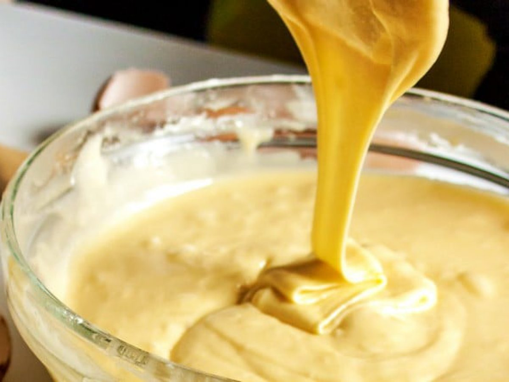

Mar's Cakes

Bolo de churros com doce de leite
Ingredientes

- 2 latas de Leite MOÇA (395g cada)
- 100g de manteiga
- 1 xícara (chá) de açúca
- 2 xícaras (chá) de farinha de trigo
- meia xícara (chá) de Leite Líquido NINHO Forti+ Integral
- 1 colher (chá) de canela em pó
- 1 colher (sopa) de fermento em pó
Modo de Preparo

- Retire o rótulo e o excesso de cola das latas de Leite MOÇA, coloque-as fechadas em uma panela de pressão e adicione água suficiente para cobri-las.
- Tampe a panela e cozinhe em fogo médio por 15 minutos (contados após início da fervura).
- Espere sair toda a pressão, abra a panela, retire as latas com cuidado e deixe-as esfriar antes de abri-las.
- Transfira o conteúdo para um recipiente e misture para ficar homogêneo. Reserve.
Massa

Em uma batedeira, bata os ovos, a manteiga e o açúcar até ficar um creme fofo.
Desligue a batedeira e junte a farinha de trigo, o Leite NINHO, a canela em pó e o fermento em pó e misture bem.
Coloque em uma forma redonda (20 cm de diâmetro) untada com manteiga e polvilhada com farinha de trigo e leve ao forno médio-alto (200°C), preaquecido, por cerca de 30 minutos.
Desenforme o bolo ainda morno, corte em 3 partes iguais e recheie com o Leite MOÇA cozido, reservando uma parte para decorar.
Polvilhe com açúcar e a canela em pó. Sirva.